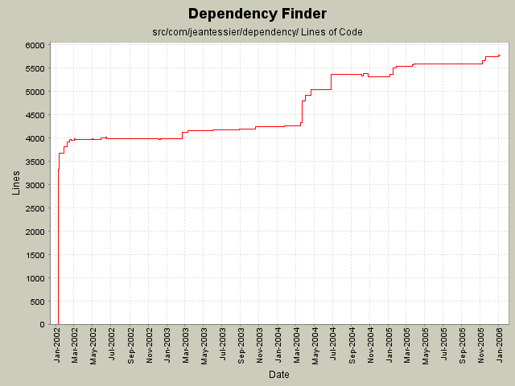

Summary Period: 2002-01-10 to 2006-01-04
[root]/src/com/jeantessier/dependency
 doc-files
(3 files, 0 lines)
doc-files
(3 files, 0 lines)

Total Lines Of Code:
5780 (2006-01-04 08:56)
| Author | Changes | Lines of Code | Lines per Change |
|---|---|---|---|
| jeantessier | 468 (100.0%) | 13991 (100.0%) | 29.8 |
Escape parentheses when converting node names to regular expressions in URLs
5 lines of code changed in:
Use new JAXP 1.3 constructs
9 lines of code changed in:
Remove Xalan JARs, use implementation from JDK instead.
62 lines of code changed in:
Clean up
1 lines of code changed in:
Make cycles comparable
69 lines of code changed in:
Put maximum on cycle length
14 lines of code changed in:
New class for detecting cycles in the dependency graph (between packages only for now)
105 lines of code changed in:
Merge redesign for published API JarJarDiff
71 lines of code changed in:
Minor clean up
3 lines of code changed in:
Conditional highlighting of inferred nodes
11 lines of code changed in:
Read confirmed vs inferred info from XML
21 lines of code changed in:
Copy confirmed status while computing closure
12 lines of code changed in:
Added attribute for confirmed status of nodes
29 lines of code changed in:
clean up
4 lines of code changed in:
Distinguish inferred from confirmed nodes
10 lines of code changed in:
Refactor to isolate printing of a node's name
19 lines of code changed in:
Carry confirmed status across GraphCopier and GraphSummarizer
24 lines of code changed in:
Rename "concrete" nodes to "confirmed"
38 lines of code changed in:
Use only spaces for indentation
4 lines of code changed in:
Use only spaces for indentation
4152 lines of code changed in:
(74 more)
Generated by StatCVS 0.2.2